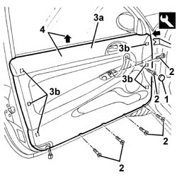

7005E08 front side door interior panel r r
- Path
- Procedures > 70 FITTINGS > 7005 PASSENGER COMPARTMENT FRONT SIDE DOORS > 7005E front side door trim > 7005E08 front side door interior panel r r
- Kind
- repair procedure (removal / refitting; the operation number is the code)
- Applies to
- all engines; all production periods
- Interactive page
- https://sloeber94.github.io/elrnDB-a147/en/#/3025670
Applies to: all engines; all production periods
 Removing
Removing
 Refitting
Refitting7005C44 interior handle panel - r r
7005M14 ELECTRIC WINDOWS, REAR VIEW MIRRORS and CENTRAL LOCKING SWITCH unit on driver's front door - R.R. (for the driver's door)
7005M12 passenger side front door electrically operated window switch - r r (for the passenger door)
7040E24 lower courtesy light indoor panel - r+r
1. Remove the bolt cover.
2. Unscrew the panel retaining bolts.
3. Remove the panel (3a) from the internal retainers (3b) using the appropriate tool.
 | Name | Country |
|---|---|---|
3 | Scraper blade | 1.823.015.000 |
4. Lift up the panel and remove it.

Applies to: all engines; all production periods
Refitting
RemovingCheck that the panel is undamaged and that the retainers are undamaged and correctly positioned.
Fit the panel.
Fit the panel engaging the internal retainers.
Tighten the panel fixing bolts.
Fit the bolt cover.
7040E24 lower courtesy light indoor panel - r+r
7005M12 passenger side front door electrically operated window switch - r r (for the passenger door)
7005M14 ELECTRIC WINDOWS, REAR VIEW MIRRORS and CENTRAL LOCKING SWITCH unit on driver's front door - R.R. (for the driver's door)
Topics linked from this page (4)
- 7005C44 interior handle panel - r r
- 7005M12 passenger side front door electrically operated window switch - r r
- 7005M14 ELECTRIC WINDOWS, REAR VIEW MIRRORS and CENTRAL LOCKING SWITCH unit on driver's front door - R.R.
- 7040E24 lower courtesy light indoor panel - r+r
Topics that link to this page (20)
- S62 FRONT DOORS CREAKING
- 5505B11 front door wiring - r r
- 5570T90 front speaker - r r
- 5580T10 bose sound system front speaker (one), lh or rh - r r
- 7005A05 front side door water guard protection r r or arrange
- 7005A28 front side door limiter- repair or replace
- 7005C11 front side door outside handle r r
- 7005C15 front side door lock barrel (in handle) - r+r
- 7005C43 link connecting front side door barrels/catch - r+r
- 7005C53 interior opening handle - r r
- 7005C55 front side door interior opening return device (with handle) - r+r for repair or replacement
- 7005D15 front side door descending window glass r r
- 7005D16 fixed window glass element - r r
- 7005D21 front door window front guide - r r
- 7005D25 front door window rear guide - r r
- 7005D33 channel of door descending glass inner guide (one) lh or rh on front side door - r r
- 7005E10 front side door inner panel - r r for replacement
- 7005M21 front side door electrically operated window - r r
- 7005N21 front side door lock motor-lock assembley-r r
- 7205E36 Stripping FRONT SIDE DOOR